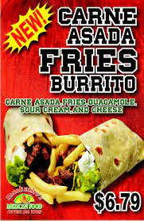
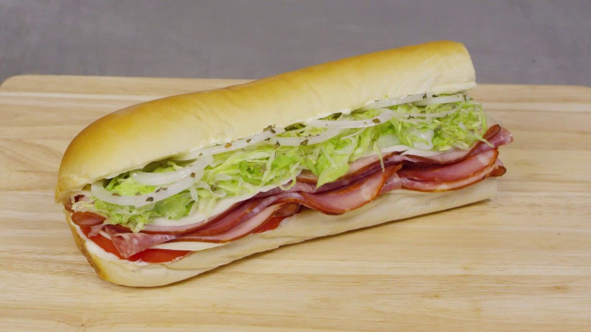
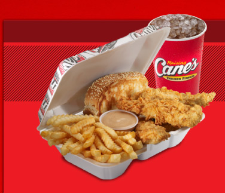

  
- Racherito's Carne Asada Fries Burrito
- Includes carne asada, french fries, guacamole, cheese, and sour cream
- Get some red & green salsa at the salsa bar
- About $11
- Jimmy John's Italian Night Club Sandwhich
- Includes provolone, ham, salami, and capicola
- I recommend adding hot pepers and dijon mustard
- About $10
- Goes well with salt & vinegar chips
- Raising Cane's Box Combo
- Includes 4 chikcen tenders, toast, coleslaw, and a drink
- I recommend swapping the coleslaw for a second piece of toast
- I recommend a Raising Cane's lemonade
- I recommend asking for a second Cane's sauce
- About $14
This video provides further details about the Rancheritos location in Logan, Utah.